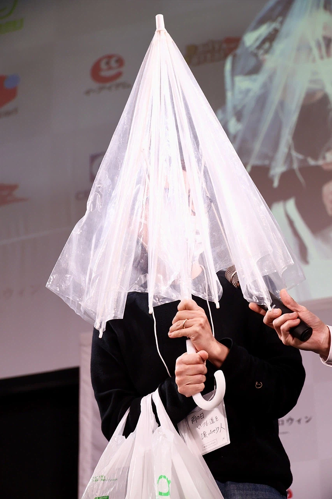
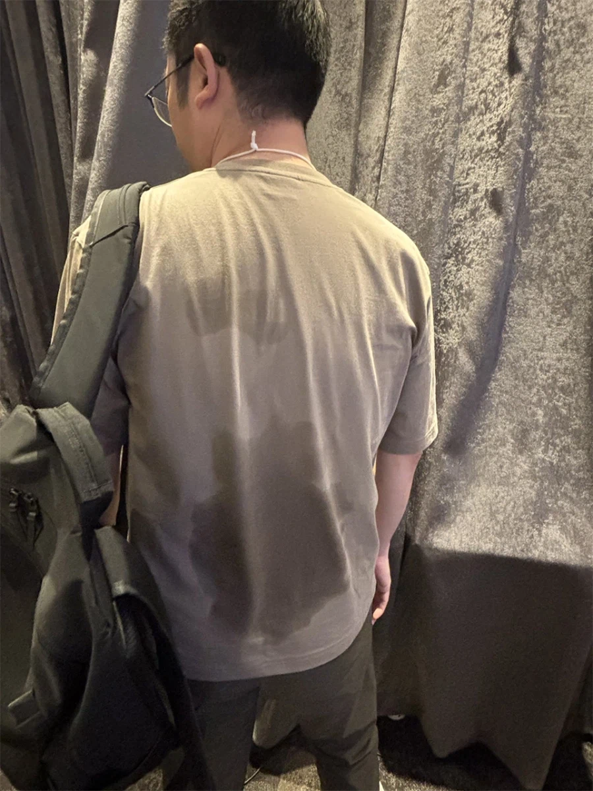
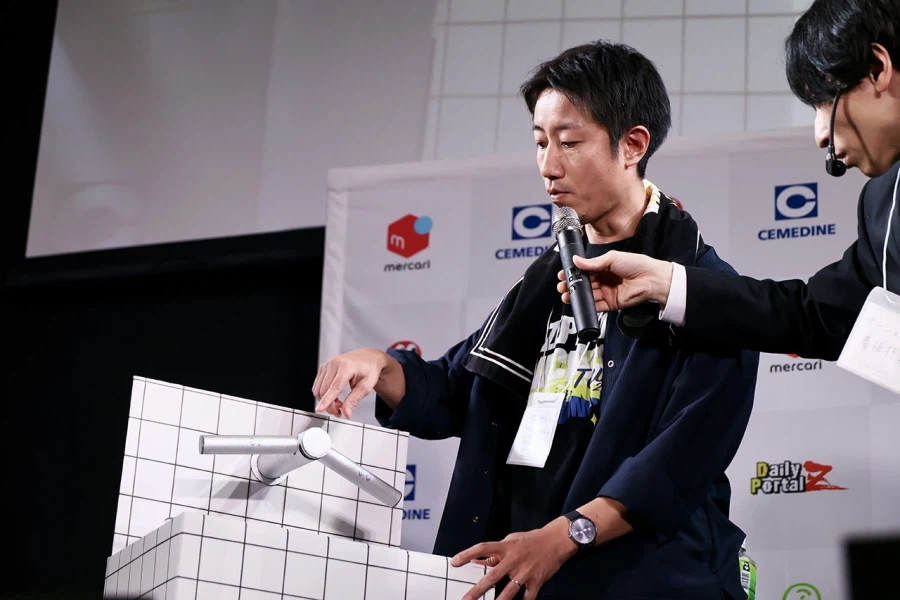
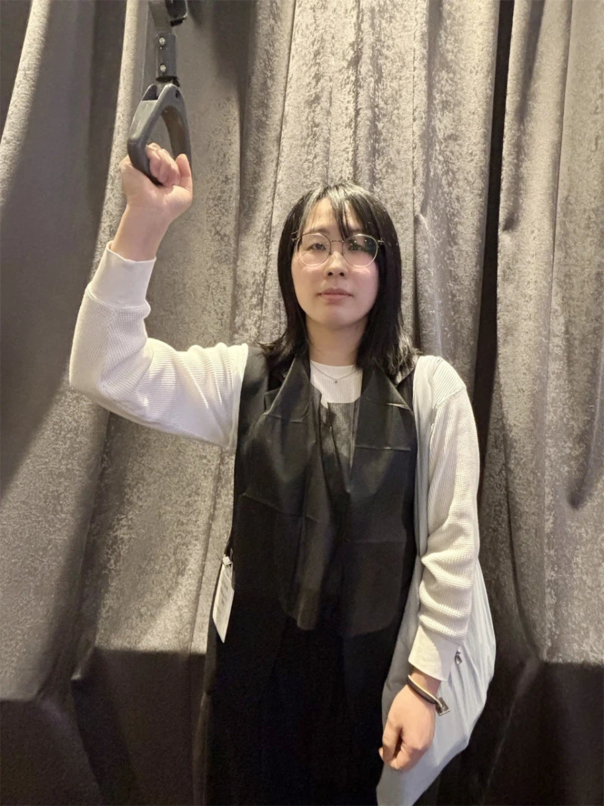
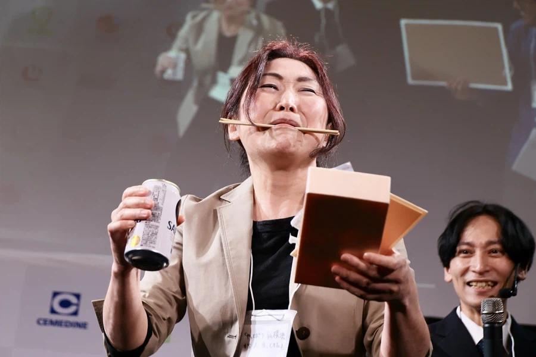

기업 사이트 글로벌 인재 개발 페이지에서 볼 수 있는 스톡 사진
손이 말라서 비닐 봉지를 열 수 없는 사람

비 오는 날 길 비켜주는 사람

자전거 타고 출근한 사람

수도꼭지 디자인이 어려워서 물 못 트는 사람
재활용 쓰레기 한 번에 버리러 가는 사람

매운 음식 먹고 지하철 탄 사람
일회용 앞치마 걸고 있음
여행 프로그램에서 이동 중 애니메이션

통로쪽 좌석에서 도시락 먹고 있는데 창가쪽 좌석 승객이 와서 비켜주는 사람
댓글
수집 당시 댓글 12개
땨뗘(봇) · 11.12 19:25:06
ㅇㅇ · 11.12 19:28:03
· 7times · 11.12 19:28:55
· ㅇㅇ · 11.12 19:34:33
해갤러 · 11.12 19:29:25
ㅇㅇ · 11.12 19:29:36
ㅇㅇ · 11.12 19:30:28
ㅇㅇ · 11.12 19:32:12
ㅇㅇ · 11.12 19:33:03
ㅇㅇ · 11.12 19:33:29
DC전사쿠루미쨩 · 11.12 19:33:43
해갤러 · 11.12 19:36:21